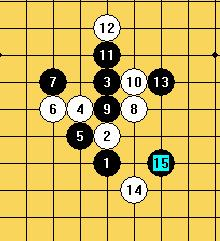

妖刀系列--大寒星刀
首页
≮炫飞☆棋社≯
#1 妖刀系列--大寒星刀 作者：邓飞 发表时间：2009-6-18 22:44:53
大寒星刀,在三手里属比较平衡的一种刀,黑白可战
(以下这个黑7不好)
(以上为正确的黑7应法,到这里黑白可战)
(以上这个黑7,比较强的一种应法,黑白可战)
(上图黑5为一打,黑白可战)
(下图黑5为二打,到黑11手后黑白可战,中后盘白棋稍优)

(上图,到这里比较平衡)
(也可以用来选择下一下的11,14手后,白稍优)
［ 逆刃 于 2009-6-18 23:03:03 时奖励此帖[金币加 20 威望加1］
#2 Re:妖刀系列--大寒星刀 作者：不知 发表时间：2009-6-18 22:46:27
 阅..我已望饼成石..待到风化之日如饼落人间别忘祭我..
阅..我已望饼成石..待到风化之日如饼落人间别忘祭我..
#3 Re:妖刀系列--大寒星刀 作者：方圆之外 发表时间：2009-6-19 11:22:36
 哈哈哈。。。。不知兄弟。看来你风化之日。将是饼落人间之时呐。。
哈哈哈。。。。不知兄弟。看来你风化之日。将是饼落人间之时呐。。
#4 Re:妖刀系列--大寒星刀 作者：鬼见愁 发表时间：2009-6-21 22:33:02
学习一下
#5 Re:妖刀系列--大寒星刀 作者：omnne 发表时间：2009-6-22 15:07:11
谱来谱来
#6 Re:妖刀系列--大寒星刀 作者：小帮帮 发表时间：2009-12-29 21:29:37
学一下，看来寒星刀的结论确实只能停留在1打黑优，2打白稍优的结论